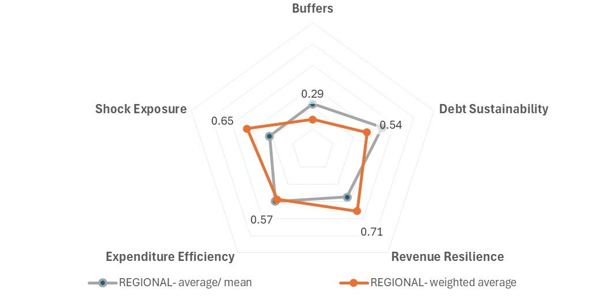
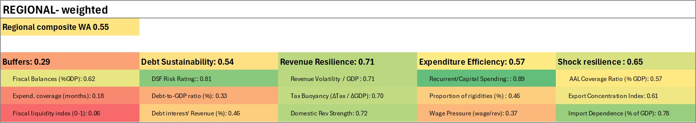

Regional Weighted Average
 | Binding constraints • Critically weak liquid fiscal buffers despite moderate aggregate fiscal balances, limiting the ability to absorb shocks without abrupt adjustment or external financing • Elevated debt vulnerabilities in several larger economies, with weak buffer positions increasing sensitivity to future shocks and financing pressures • High structural exposure to climate, disaster, and external demand shocks, requiring substantially stronger precautionary fiscal frameworks than currently observed |

Fiscal context and recent trends
The GDP-weighted regional results, heavily influenced by larger economies such as Fiji and Papua New Guinea, suggest moderate overall fiscal resilience across the Pacific (composite score: 0.55), but with significant structural imbalances across pillars. Revenue Resilience is the strongest component (0.71), supported by strong Domestic Revenue Strength (0.72), tax buoyancy (0.70), and relatively stable aggregate revenue performance, reflecting the contribution of larger and more diversified economies with broader tax bases and stronger administrative systems. Expenditure Efficiency is also moderate-to-strong (0.57), particularly due to relatively stable recurrent-to-capital expenditure structures (0.89), although spending rigidities and wage pressures (0.37) continue to constrain adjustment flexibility. By contrast, Buffers remain critically weak (0.29). Despite moderate fiscal balance performance (0.62), the region’s Fiscal Liquidity Index remains extremely low (0.06) and expenditure coverage reserves remain insufficient (0.18), indicating that many countries continue to operate with limited liquid fiscal space despite post-pandemic recovery. Debt Sustainability is moderate (0.54), supported by concessional financing structures and relatively favorable DSF ratings (0.81), but constrained by elevated debt burdens in several larger economies. Shock Resilience is relatively strong in weighted terms (0.65), reflecting the greater recovery capacity and financing access of larger economies, although underlying exposure to natural disasters, tourism cycles, import dependence (0.78), and external shocks remains substantial across the region.
Fiscal context and recent trends
The GDP-weighted regional profile reflects the fiscal resilience of the PIC-11’s economic mass, with larger economies shaping the aggregate results. The regional weighted composite score is moderate at 0.55, indicating that the region has important areas of resilience but also clear structural weaknesses. The weighted profile is characterized by relatively strong revenue performance and shock resilience, but very weak liquid buffers. This means that while larger economies often have broader revenue systems and greater recovery capacity, the region remains constrained by limited immediately available fiscal space.
Resilience profile (FRI results)
The weighted regional profile is uneven. Revenue Resilience is the strongest pillar at 0.71, followed by Shock Resilience at 0.65, Expenditure Efficiency at 0.57, and Debt Sustainability at 0.54. Buffers are the weakest pillar at 0.29. This pattern suggests that aggregate resilience is not uniformly weak, but is constrained by a clear imbalance: stronger revenue and shock-resilience scores coexist with very limited liquid fiscal buffers.
Buffers
Buffers are the weakest component of the weighted regional profile, with a score of 0.29. While fiscal balances are moderate at 0.62, expenditure coverage is very weak at 0.18 and the Fiscal Liquidity Index is critically low at 0.06. This indicates that even where fiscal balances have improved, many economies still lack sufficient liquid resources to absorb shocks without borrowing, expenditure compression, or external support.
Debt sustainability
Debt Sustainability is moderate at 0.54. The DSF Risk Rating score is relatively strong at 0.81, reflecting concessional financing and favorable formal risk assessments in several economies. However, the debt-to-GDP score is weaker at 0.33, and debt interest-to-revenue is moderate at 0.46. This suggests that debt conditions are manageable in parts of the region, but remain vulnerable where debt levels are elevated and buffers are thin.
Revenue resilience
Revenue Resilience is the strongest pillar in the weighted regional profile at 0.71. The underlying indicators are also strong: revenue stability scores 0.71, tax buoyancy 0.70, and Domestic Revenue Strength 0.72. This reflects the influence of larger economies with broader domestic revenue systems and stronger tax administration. However, the result should not be interpreted as uniform across all PIC-11 economies, since smaller economies remain more dependent on grants, fishing revenues, tourism, and external flows.
Expenditure efficiency and flexibility
Expenditure Efficiency is moderate at 0.57. Recurrent-to-capital spending performs strongly at 0.89, suggesting relatively favorable aggregate expenditure composition. However, the Proportion of Rigidities score is lower at 0.46, and Wage Pressure scores 0.37. This indicates that while expenditure composition appears relatively balanced at the aggregate level, many countries still face limited flexibility once wages, recurrent costs, and other rigid spending commitments are considered.
Shock resilience
Shock Resilience is relatively strong in the weighted profile at 0.65. Import Dependence performs strongly at 0.78, Export Concentration at 0.61, and AAL Coverage at 0.57. This suggests that, when weighted by economic size, larger economies provide somewhat stronger aggregate shock-absorption capacity than the simple regional profile. Even so, the region remains exposed to natural disasters, external demand shifts, commodity cycles, and climate-related pressures.
Policy implications
The central priority for the weighted regional profile is to strengthen liquid fiscal buffers. The very low Fiscal Liquidity Index and weak expenditure coverage suggest that fiscal repair has not yet translated into sufficient operational shock-absorption capacity. Policy should therefore focus on explicit buffer targets, stronger cash management, better integration of disaster risk financing, and debt strategies that protect fiscal space. Revenue systems are comparatively stronger in weighted terms, but these gains need to be preserved and translated into durable savings rather than recurrent spending pressures.
Key transmission channels
• Limited liquid buffers despite moderate fiscal balances
• Elevated debt pressures in larger economies
• Revenue systems that are stronger in aggregate but uneven across countries
• External shocks, natural disasters, and climate risks
• Spending rigidities that limit adjustment flexibility